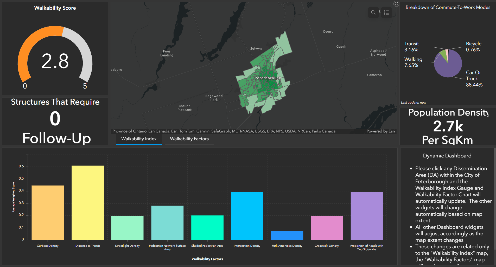
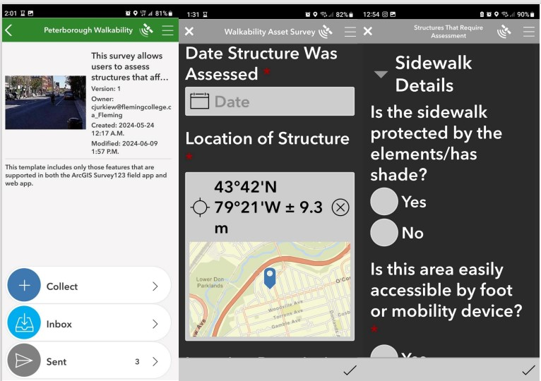
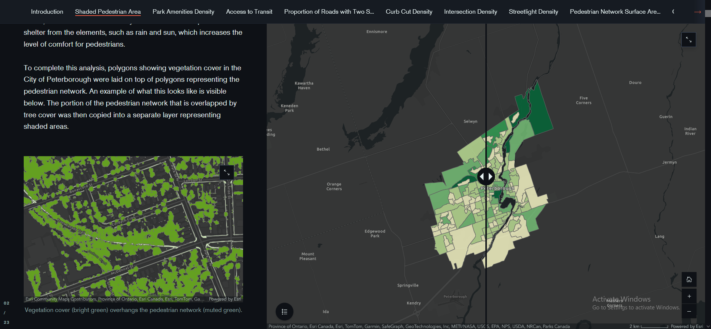
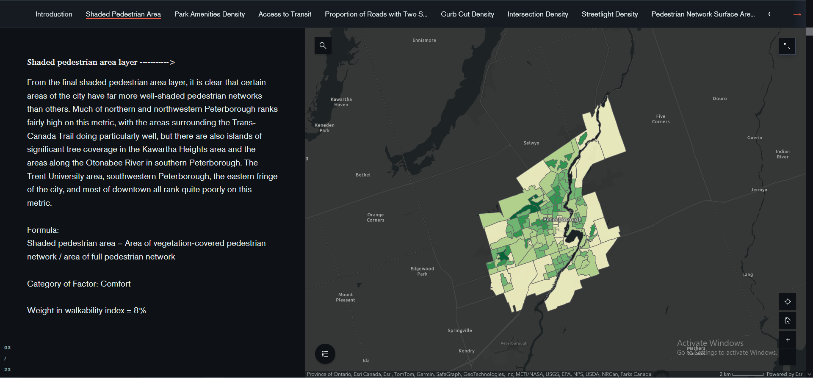

Static Maps
For our static map outputs, we have created individual chloropleth maps for each factor that was considered as part of the index as well as the final walkability index. We have also created a mapbook with several layers overlayed on the final walkability index to create a better understanding of how the walkability index values relate to the underlying geography of each neighbourhood.
Individual Maps
Each walkability factor is shown on its own map with some of the input data (such as transit stops) overlaid to provide visual context. These maps also include the formula that was used to calculate the factor's value (subfactor one divided by subfactor two) as well as its weight in the final index. On the final walkability map, a description of each factor and their weighting is provided to explain the components that went into calculating the index. As well, the map is annotated with infographics that contain census data (such as household size and commute-to-work mode) in order to provide additional context related to the study area.


Mapbook
This mapbook overlays several other layers (such as buildings, transit stops, and the location of parks and schools) over the final walkability index map to get a better understanding of the geography that underlies the index. The City of Peterbourough is split into a 52-part grids, allowing viewers to get an up-close and very detailed view of each neighbourhood.
Link


Dashboard
The ArcGIS Dashboard contains several elements that change with the current map extent and others that change when the user clicks a dissemination area. The widgets included in the Dashboard display the population density (per sq km), a breakdown of commute to work modes, the walkability index score, and the final weighted values for each of the walkability index factors. The former two adjust based on extent, whereas the latter two adjust based on which dissemination area is selected. On top of this, it is possible to switch layers and directly interact with the underlying layers that make up each walkability factor.
Link Survey123
Through the use of Survey123, city workers will be able to document, track, and comment on structures associated with walkability in order to use the data in future analyses. To name a few examples, the survey can collect data related to sidewalk quality, park bench counts, and accessibility of garbage and recycling cans. The results of are directly linked to the Dashboard, with results from the survey being automatically populated on a feature layer stored in ArcGIS Online. The results from this survey can be downloaded into ArcGIS Pro for further analysis at a later date.
Link StoryMap
The ArcGIS StoryMap breaks down the various factors that went into calculating the index in an easily-accessible way for people without an understanding of GIS or walkability indexes in general. Most of the app consists of alternating pages. In addition to some reasoning for choosing each walkability factor and some methodological info, the first page contains a slider map for doing side-by-side comparisons of the two subfactors that went into each factor. As well, it includes a mini-map that shows some of the input data that went into calculating the factors (such as LIDAR vegetation data overlaid on polygons representing the pedestrian network, as visible below). The second page contains an overview map showing the final layer for that factor summarized to dissemination areas, as well as some basic information and analysis relating to the layer. There are also pages displaying the final walkability index in two different symbologies and some other informational pages placed throughout.
Link  